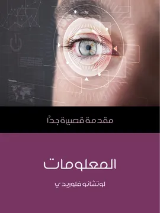

المعلومات: مقدمة قصيرة جدًّا

قراءة عربية أصلية محددة النطاق في الصفحات 9، 10 من ملف PDF المرتبط، وليست تلخيصا كاملا للكتاب. نناقش ما تدعمه هذه المقاطع فقط.
تحذير شانون
يفتتح فلوريدي مقدمته، بترجمة محمد سعد طنطاوي: يهدف هذا الكتاب إلى تقديم خطوط عامة عن ماهية المعلومات؛ عن طبيعتها متعددة الأوجه، وعن الأدوار التي تلعبها في العديد من السياقات العلمية، وعن الموضوعات الاجتماعية والأخلاقية التي تثيرها أهميتها المتزايدة. والخطوط العامة انتقائية بالضرورة، وإلا فإنها لن تكون مختصرة جدًا أو تتسم بطابع تقديمي إلى الموضوع؛ آمل أن يساعد هذا الكتاب القارئ في فهم التنوع الكبير في الظواهر المعلوماتية التي نتعامل معها يوميًا، والأهمية العميقة والأساسية لها، ومن ثم مجتمع المعلومات الذي نعيش فيه. إن طبيعة المعلومات من حيث كونها تتجلى في صور كثيرة، وما تتسم به من كثرة المعاني، يسيء إلى سمعتها؛ فقد ترتبط المعلومات بالكثير من التفسيرات بناء على وجهة النظر المتبناة، وفي معرض كلامه عن المعلومات كان أبو نظرية المعلومات كلود شانون حذرًا جدًا حين قال: منح كتاب عديدون كلمة «معلومات» معاني مختلفة في المجال العام لنظرية المعلومات.
زاوية وحدود القراءة
قراءة في مطلع المقدمة بترجمة محمد سعد طنطاوي (ص 9-10 من الملف)، ولا تدعي تلخيص فصول الكتاب في نظرية المعلومات.
الطبعة والقراءة
هذا الكتاب صادر ومتاح مجانًا من مؤسسة هنداوي عبر صفحة الكتاب الرسمية وملفها المرتبط.
تنزيل PDF المجاني ↓ القراءة والمصدر الرسمي ↗